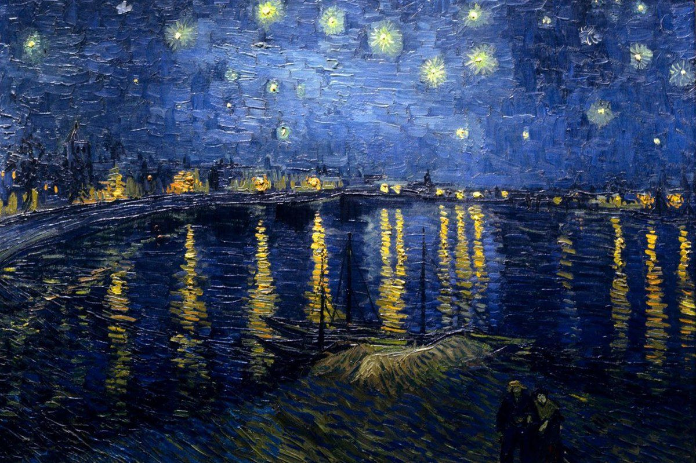
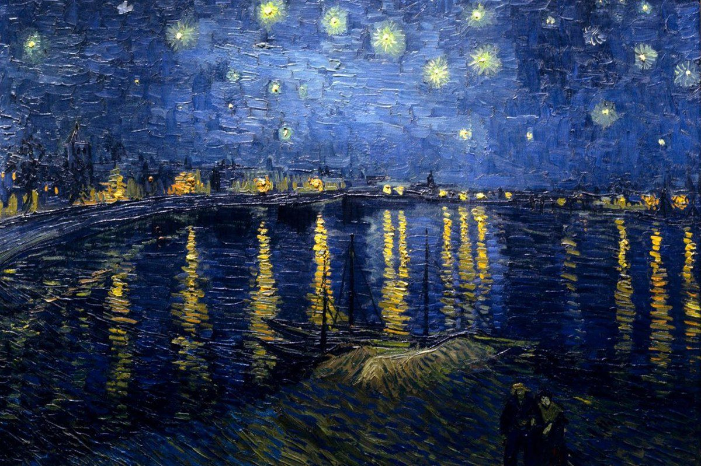
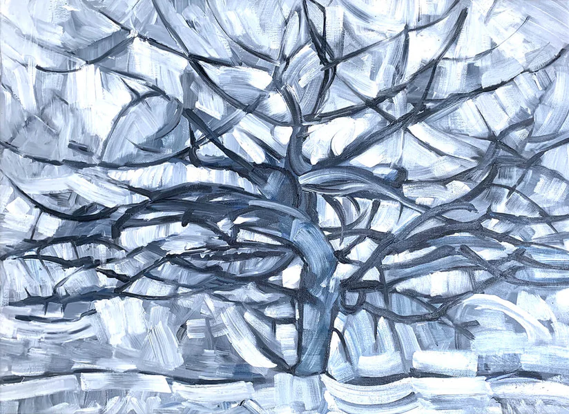
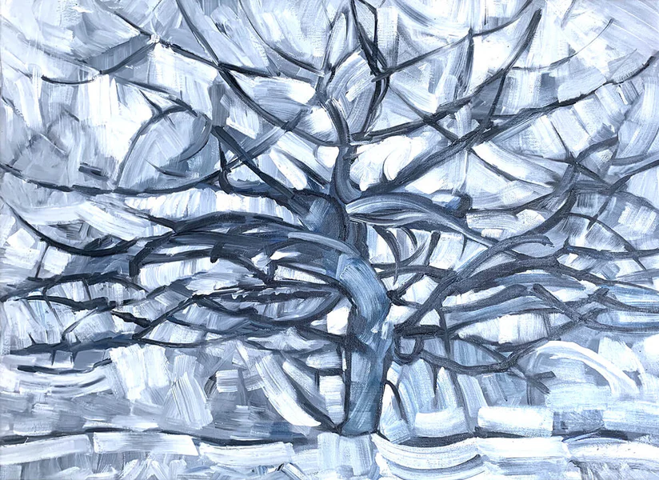

Veuillez mettre votre téléphone en mode paysage pour une meilleure expérience d'utilisation de notre site.
Qu'est ce que tu fais encore ici ?
Tu peux PARTIR !
 

 


est un mouvement artistique du 19e siècle mettant l'accent sur la lumière et la couleur. "La Nuit Étoilée sur le Rhône" (en arrière plan) de Van Gogh montre des couleurs vibrantes et des coups de pinceau expressifs, typiques de cette période, capturant l'atmosphère émotionnelle plutôt que la précision réaliste.
Vincent van Gogh était un peintre néerlandais célèbre pour ses œuvres émotionnelles et spirituelles. Bien qu'il n'ait vendu qu'une seule peinture de son vivant, il est aujourd'hui l'un des artistes les plus célèbres, connu pour son utilisation audacieuse de la couleur et son style de pinceau distinctif.
L'art contemporain par les artistes d'aujourd'hui, qui évoluent dans un monde global et MULTIFACETTES.